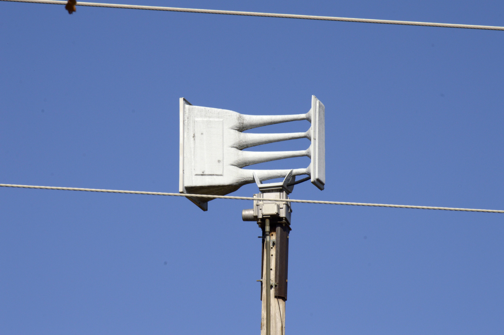

Whelen WPS-4004

This Whelen WPS-4004 is located at 111th St & Yale Ave.
GPS coordinates: 36.003042, -95.921647
This siren runs on a Digital ESC-864, and peaks at 465 Hertz.
Siren Test Audio (12/4/2024):
Your browser does not support the audio element.